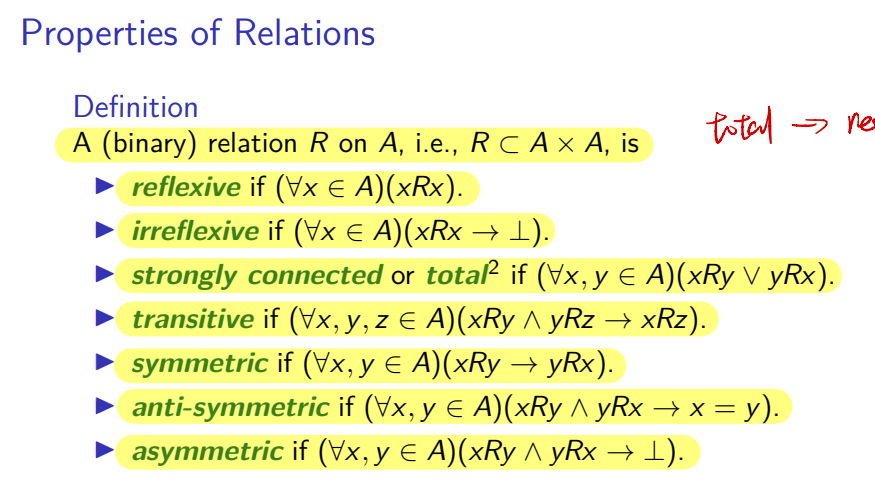
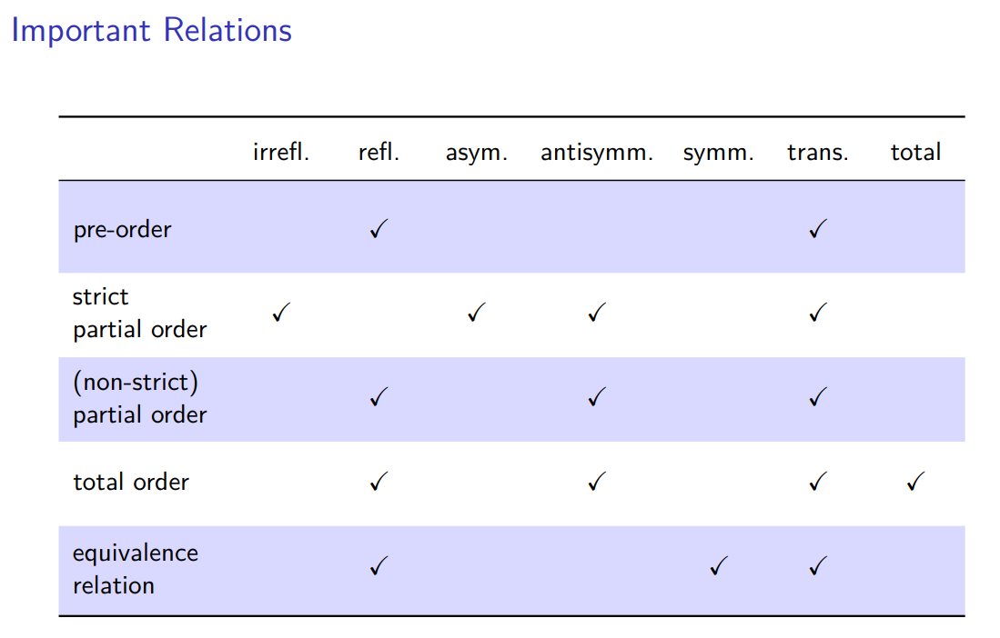
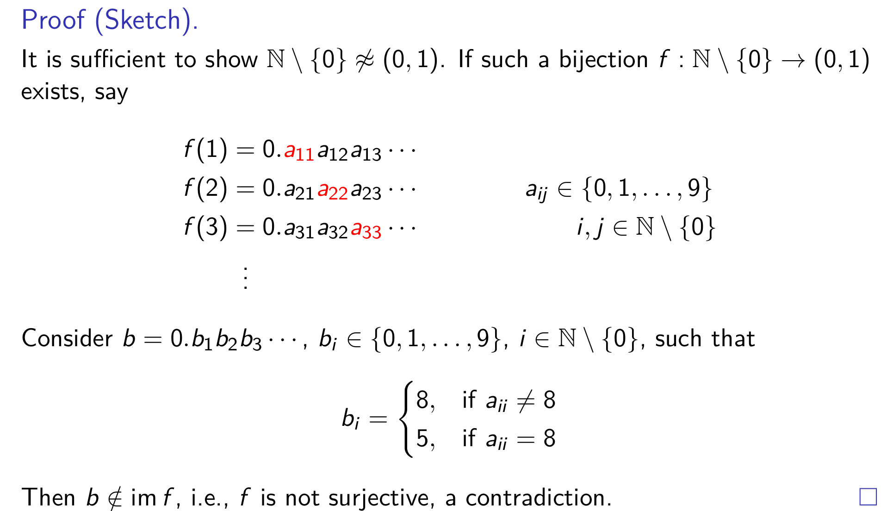
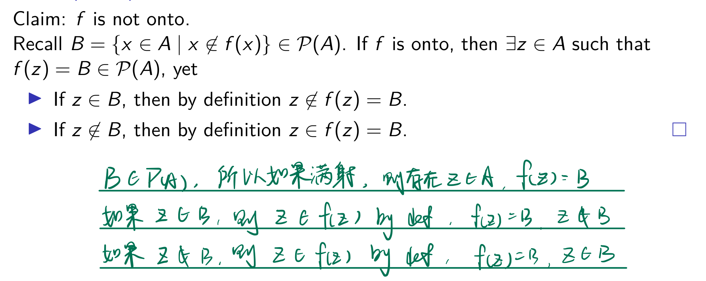
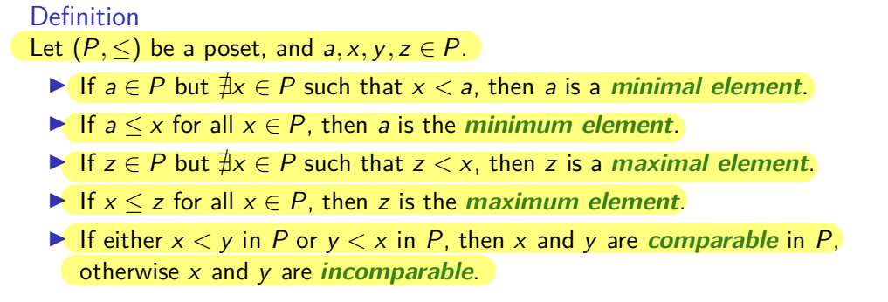
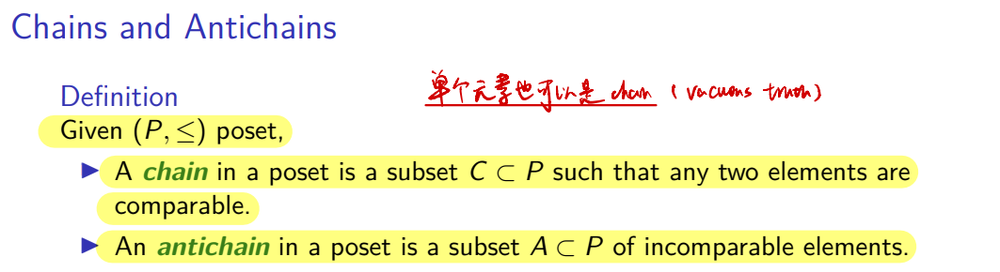
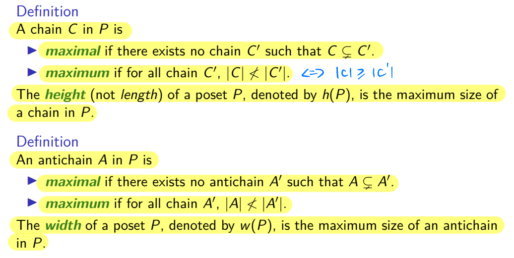

VE203 Mid-term RC
In this recitation class, we will breifly go over important content in logic, induction, algebra structure, and equinumerosity. In addition, we will review basic concept of pigeonhole principle, relation and partial order. After illustration of concept, exercise will be provided for you to get prepared for mid-term exam. Good luck!
Logic
You must be very familiar with basic concept like logic operator, propostion, etc. We will omit these things in Recitation class. If you are not familiar with them, please review slides carefully!
We will only talk about Natural Deduction.
Natural Deduction
Basic process is as follows.
- Observing the pattern of conclusion and guess what rule may be used for the last step. (For example, negation should be introduced; ∨ is the core connective so it should be introduced or a negation should be cancelled at last)
- Repeat step 1 to see whether you can make the whole tree (from the bottom to the top)
- Make necessary assumption
- Remember to use rule to discharge all assumption
- If you find one way is false, please turn to another route
- At last, please check whether you have discharged all assumptions, written all deduction symbols like "∨,I" and made your answer easy to read.
Note: Don't worry about the rules. They will be provided.
Induction
Correct Use of Induction
First thing first, structure really matters. Please strictly follow the structure.
- Base Case,
- Inudctive Hypothesis, (also write down "IH" at the exact step where you use it)
- Inductive Case
Also, you should be able to distinguish weak induction, strong induction, structural induction. Please use correct induction method according to your need or instruction.
String
Definition: The set Σ∗ of strings over the alphabet Σ is defined recursively by
- ε∈Σ∗, where ε is the empty string containing no symbols.
- If a∈Σ and x∈Σ∗, then ax∈Σ∗, where ax:=(a,x)∈Σ×Σ∗ is an ordered pair.
Note that ∅∗={ε}.
Pay attention to definition here. We are not able to put a character to the right hand side of a string. Please don't do that in exam.
String Operation
We can do a lot of interesting operation on string, including concatenation and reversal.
Concatentation
Definition: Let Σ be a set of symbols and Σ∗ the set of strings over Σ. We can define the concatenation of two strings, denoted by ⋅:Σ∗×Σ∗→Σ∗, recursively as follows.
- If z∈Σ∗, then ε⋅z:=z, where ε is the empty string.
- If w,z∈Σ∗ and w=ax, then w⋅z=ax⋅z:=a(x⋅z).
Note: we can put char in the left handside of a string without any operator, like αx. α is a character while x is a string. However, if we want to concatentate two string, we have to use operator.
Length
Definition: The length of a string, ℓ:Σ∗→N,w↦ℓ(w), can be recursively defined as:
- ℓ(ε)=0.
- ℓ(ax)=1+ℓ(x) if a∈Σ and x∈Σ∗.
Reversal
Definition: We define the reversal of a string (⋅)R:Σ∗→Σ∗,w↦wR∈Σ∗ recursively by:
- εR=ε
- (ax)R=xR⋅aε for ax=(a,x)∈Σ×Σ∗.
Pay attention to definition of each operation carefully! Never do concatentation between a character and a string!
Algebra Structure
Monoid
Definition: A monoid is a triple (M,e,⋅), where M is a set, together with an identity element e, and a function M×M→M, such that for all m,n,p∈M, the following monoid laws hold,
- m⋅e=e⋅m=m
- (m⋅n)⋅p=m⋅(n⋅p)
Monoid Homomorphism
Definition: A monoid homomorphism, or monoid morphisms, between two monoids (M,∗,eM) and (N,⋅,eN) is a function f:M→N such that
- f(x∗y)=f(x)⋅f(y) for all x,y∈M, and
- f(eM)=eN.
If a problem asks you to check whether a set with an operator is a monoid or check whether a mapping is a monoid homomorphism, what you need to do is to follow the definitions and verify them.
Therefore, please make sure you can recall the definitions during the exam.
Relation
Definition: A subset R⊆A×B is called a (binary) relation from A to B. The domain and range of R is given by
-
Domain: (domain(R)):={x∣∃y(xRy)}
-
Range: (range(R)):={y∣∃x(xRy)}
If A=B, we say that R is a relation on A.
Note: Since R is a set, we often write R = {(a,b),...}
E.g. R is a relation on [2], R = {(1,1),(2,2),(3,3)}. This means 1R1, 2R2, 3R3.
Operations on Relations/Functions
For arbitrary sets/relations/functions A, F, and G:
-
The inverse of F is the set
F−1={(y,x)∣xFy}
-
The composition of F and G is the set (beware of the order)
F∘G={(x,z)∣∃y(xGy∧yFz)}
-
The restriction of F to A is the set
F∣A={(x,y)∣(xFy∧x∈A)}
-
The image of A under F is the set
F(A)=im(F∣A)={y∣(∃x∈A)(xFy)}
If F is a function, then
F(A)={F(x)∣x∈A}.
Injection & Surjection
Given a function F:A→B, with dom(F)=A and im(F)⊆B:
-
F is injective or one-to-one if
∀x,y∈A(F(x)=F(y)⟹x=y).
-
F is surjective or onto if
im(F)=B.
-
F is bijective if it is both injective and surjective.
Theorem
Given f:A→B, g:B→C, A=∅, then:
-
If g∘f is injective, then f is injective.
-
If g∘f is surjective, then g is surjective.
Note: Injection and surjection may not be tested, but you still need to remember some properties.
Special Properties of Relation

Note: they are really important. Please remember them well!
Special Relation
With these properties, we can define some special relation.

Please remember them well!
Equivalence Class
We then focus on a special kind of relation: equivalence relation.
Definition: Given an equivalence relation R on A, the equivalence class containing x is the set
[x]R:={t∈A∣xRt}
Theorem: Given an equivalence relation R on A, then for x,y∈A:
[x]R=[y]R⟺xRy
Partition
Definition: A partition Π of a set A is a set of nonempty subsets of A that is disjoint and exhaustive, i.e.,
- (∀a,b∈Π) (if a=b → a∩b=∅);
- ⋃Π=A.
Theorem: Given an equivalence relation R on A, the set
{[x]R∣x∈A}
of all equivalence classes is a partition of A.
Quotient Set
Definition： Given an equivalence relation R on A, the quotient set is given by
A/R:={[x]R∣x∈A}
Numbers and Equinumerosity
Equinumerosity
Definition: A set A is equinumerous to a set B (written A≈B) if there is a bijection from A to B.
Theorem: For any sets A, B, and C:
- ⊢A≈A.
- A≈B⊢B≈A.
- (A≈B∧B≈C)⊢A≈C.
While you may not directly face problems proving that one set is equinumerous to another, it's still important to review some proofs in your homework and slides.
Some example you need to remember:
- N≈Z
- N×N≈N
- Q≈N
Cantor's Theorem
The proof of this theorem is much more important than theorem itself.
First Part
We want to prove R≈N

Note: This is diagonal proof. You may meet problem that asks you to apply this kind of idea to other cases.
Second Part
We want to prove For every set A,A≈P(A)

Note: This way to form contradiction is important.
Dominate
Definition : A set A is dominated by a set B (written A⪯B) if there is an injection from A to B.
Countable Sets
Definition: A set A is countable if A⪯N. Otherwise, it is called uncountable.
Cantor-Schröder-Bernstein Theorem
For sets A, B, and C,
- Reflexivity: ⊢ A ⪯ A.
- Transitivity: (A⪯B)∧(B⪯C)⊢A⪯C.
- Antisymmetry: (A⪯B)∧(B⪯A)⊢A≈B.
Finite Sets and Pigeonhole Principle
First, please remember the definition of natural number set.
[n]={1,2,3,...,n}
Finite Set
A set A is finite if it is equinumerous to [n] for some n. A set is infinite if it is not finite.
Pigeonhole Principle
Definition: No set of the form [n] is equinumerous to a proper subset of itself, where n∈N.
Note: this expression may seem abstract. If so, you can remember the example that putting 4 apples on 3 desks. Then there is at least one desk with 2 apples on it.
Another version sometimes may seem more useful.
Definition: Let r,s∈N\{0}, if a set containing at least rs+1 elements is partitioned into r subsets, then some subsets contains at least s+1 elements.
Erds–Szekeres Theorem
Definition: Let A=(a1,...,an) be a sequence of n different real numbers. If n≥sr+1 then either A has an increasing subsequence of s+1 terms or a decreasing subsequence of r+1 terms (or both).
Patience Sort
E.g. (4,8,6,10,5,7,2,3)
Partial Order
I have to admit that there are so many abstract concepts. You should go over slides carefully.
Convention
We often call an ordered pair of a set and a partial order operator as poset.
E.g. (N,>) is a poset
Covers
Definition: Let P be an ordered set. Then y∈P is called a cover of x∈P if x<y and for all z∈P,
x≤z≤y⟹z∈{x,y}.
We also say that y covers x, or x is covered by y. Such x and y are called adjacent.
Hasse Diagram
There are some basic rules.
- Edges are the cover pairs (x,y) with x covered by y;
- Edges are drawn such that x is below y;
- Edges are monotone vertically.
E.g. P={(0,0),(1,1),(2,2),(0,2),(1,2)}. Please draw Hasse Diagram for this partial order.
Special Element

Note: Minimal and Maximal elements are for a part of the poset; Minimum and Maximum is for the entire poset.
With the idea of comparability, we can draw comparability graph and incomparability graph.
Special Structure

Lemma: Given a chain C and an anti-chain A of a poset, ∣A⋂C∣≤1
The idea of maximal and maximum can also be applied to chain and anti-chain.

Note: here maximal is also a "local" concept. We focus more on the elements rather than absolute length.
This is interesting that by pigeonhole principle,
- If P can be partitioned into t anti-chains, then the height of P is at most t.
- If P can be partitioned into s chains, then the width of P is at most s.
Dilworth's Theorem
A poset of width w can be partitioned into w chains.
Reference
- ve203 slides. 24SP. Runze Cai.